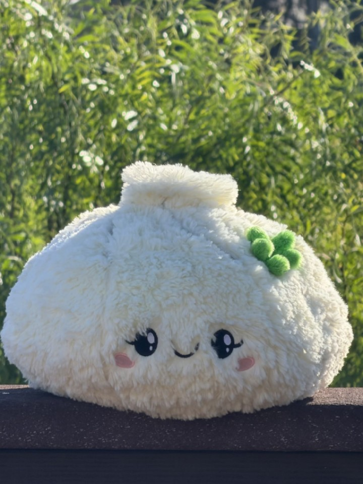
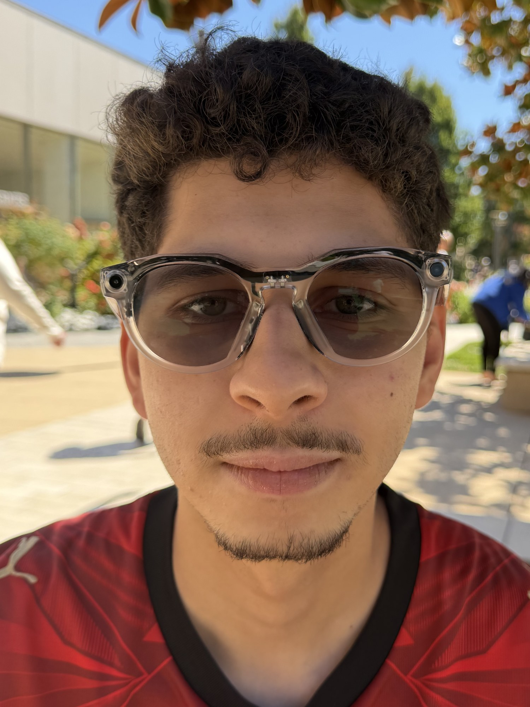
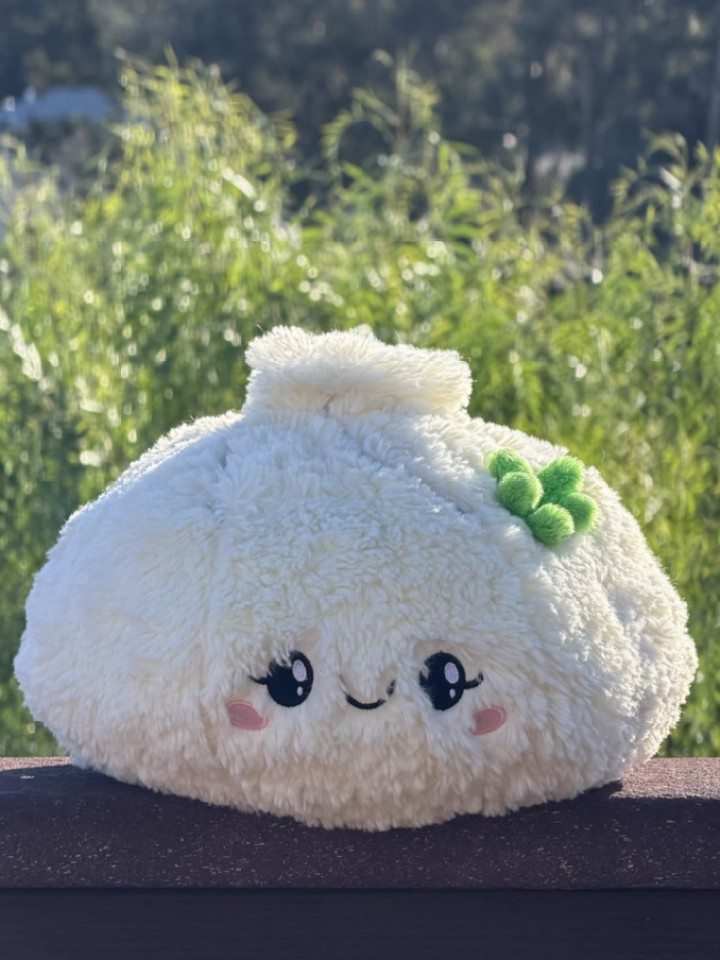
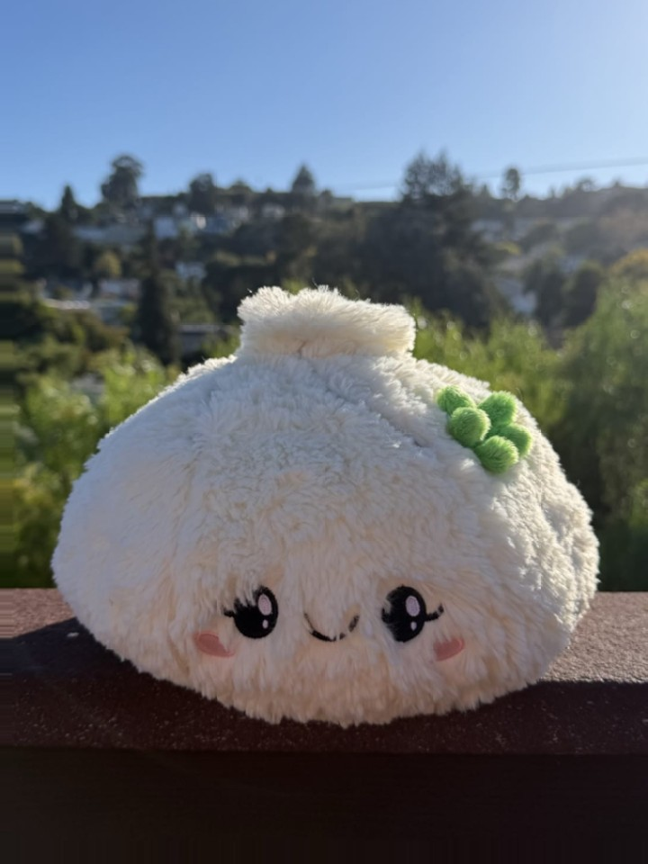
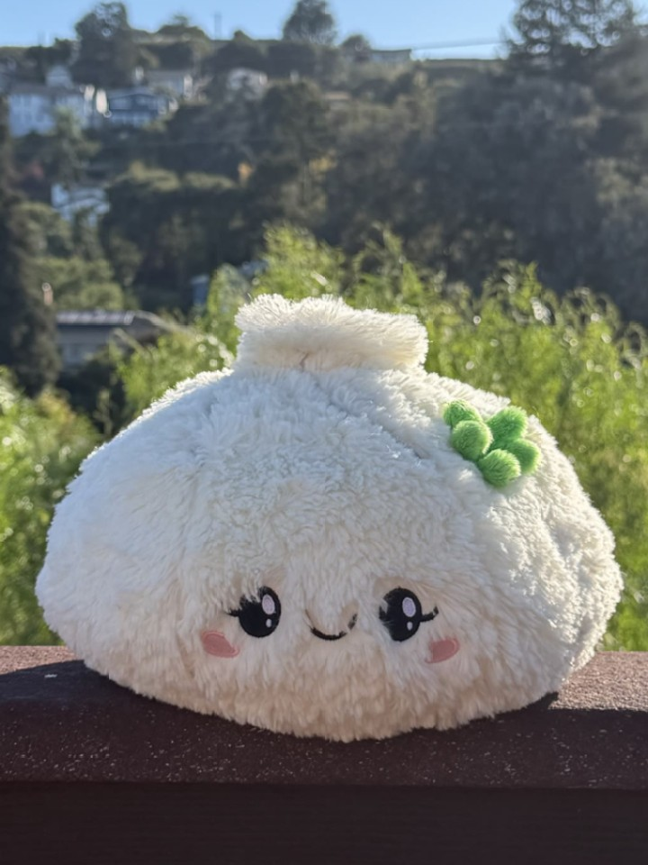
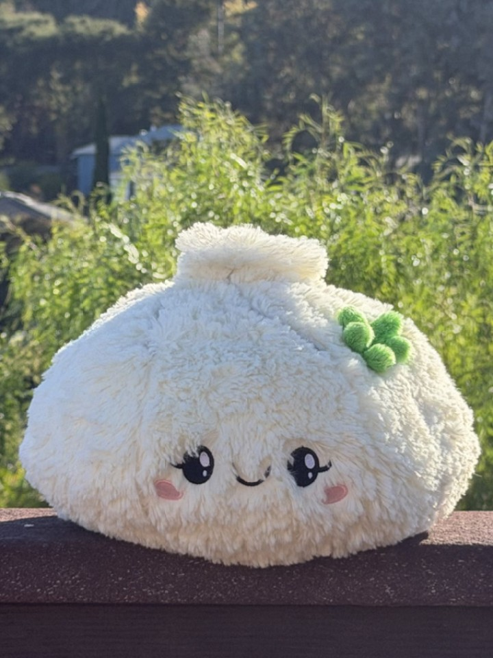
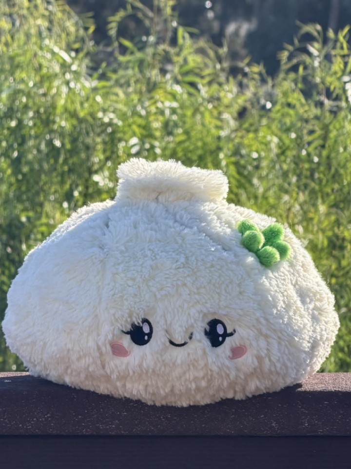
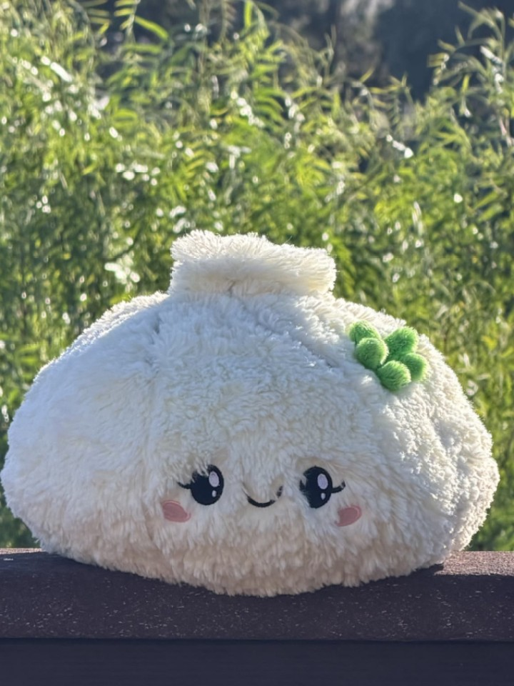
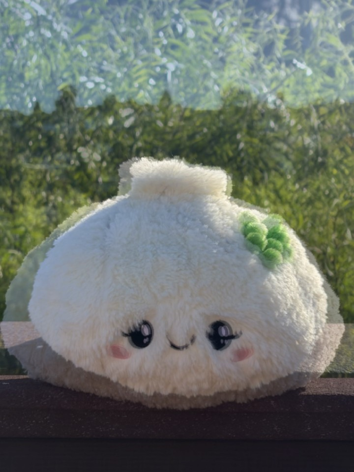

Project 0 · iPhone 17 Pro Max · every focal length from 24 to 385 mm
Becoming friends with your camera
I shot all of this on one phone, an iPhone 17 Pro Max, using every focal length it has between 24 and 385 mm. The subjects were my own face outside, the Neiman Marcus sign, and a bao plush on my balcony rail. In each case I wanted to see what the zoom ring changes and what it leaves alone. The lens only sets how much of the scene lands on the sensor. Where I was standing set the perspective.

24→385mm
Selfie: the wrong way vs. the right way

 24 mm
385 mm
24 mm
385 mm
I took the first photo from arm’s length at 24mm, then walked back several yards and zoomed to 385mm so my face filled about the same amount of the frame. I then cropped the close shot so the two faces are the same width. Cropping only throws away pixels, so it cannot change perspective, and the comparison stays fair. The close one is the typical selfie: nose and cheeks pushed forward, ears pulled back, jaw narrowed. The second looks closer to how people usually see a face.
What changed is the distance, not the zoom. When the camera is close, my nose is much nearer to the lens than my ears or the sides of my head, so the nearer features take up more of the picture. From several yards back, those depth differences are tiny compared with the distance to the camera, so the face stays in proportion. The long zoom only crops that distant view; it does not move the center of projection.
72→24mm
Architectural perspective compression


I ran the same experiment in reverse on the Neiman Marcus facade, shot slightly off axis so the corner and the palm sit at different depths. First I stood back and zoomed to 72mm. Then I walked toward the wall and shot at 24mm, keeping the sign and the ribbed face about the same size.
The far shot looks flatter. From that viewpoint the palm, the bushes, the wall, and the sky are all a long way from the camera, so their relative sizes barely differ. Walking in moves the center of projection: the nearby plants and the lamp grow, and the wall starts to lean and recede. It is the same building and the same sign with different geometry, and the only thing that changed the perspective was where I stood.
24→240mm
The dolly zoom

{kind=link}
Walk back, zoom in.
Seven handheld stills from 24 mm to 240 mm, registered on the bao and motion-interpolated into one continuous move. The bao holds its size while the hillside behind it closes in.






This is the Vertigo shot: move the camera back while zooming in so the subject stays roughly the same size. I used a bao plush on a balcony rail, since it is small and has a deep background behind it, and took seven stills from 24mm to 240mm, then stitched them into a looping GIF.
The trick works because image size and perspective are controlled by different things. Size depends on focal length divided by distance, while perspective depends only on distance. Holding the bao at a constant size while the focal length goes from 24mm to 240mm means the camera finished about ten times farther from the bao than it started. Over that walk the hillside, the houses, and the sky collapse into a wall of trees. It is the same relationship as the selfie and the building, just animated.
The stills were handheld, so the bao drifted by up to a third of its width between frames. I registered them with a similarity transform (scale plus shift) found by multi-scale normalized cross-correlation on the bao, then refined on its face. Blend the first and last frame and the bao is sharp while the background is doubled, which is the whole effect in one image.